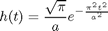
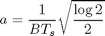
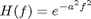
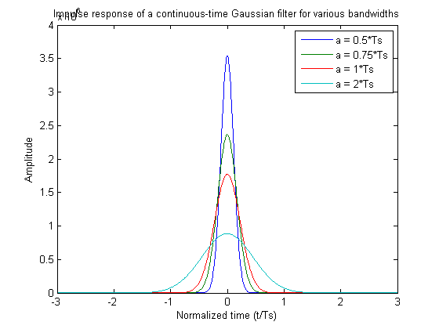
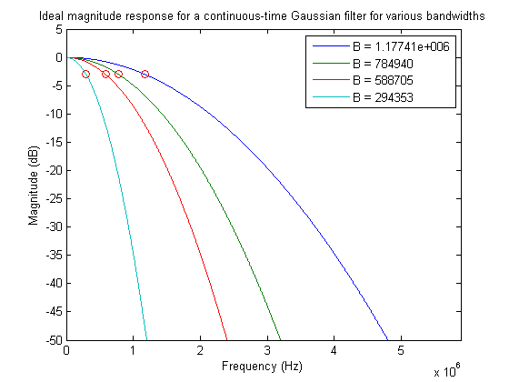
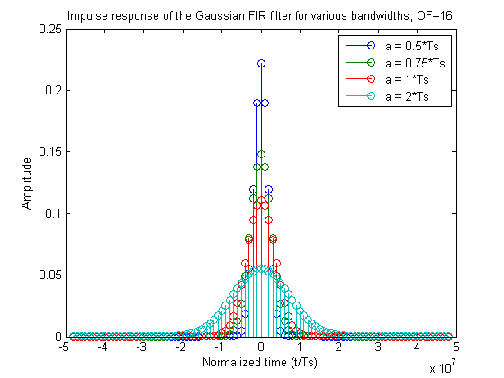
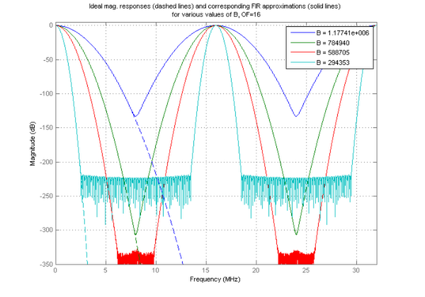
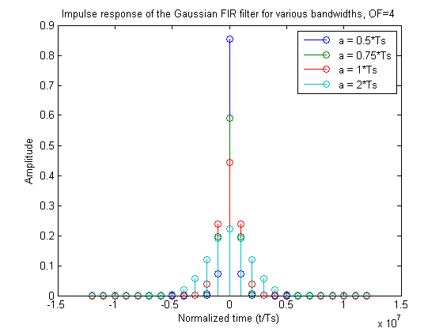
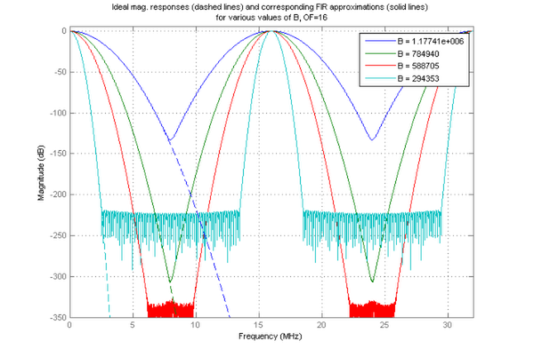
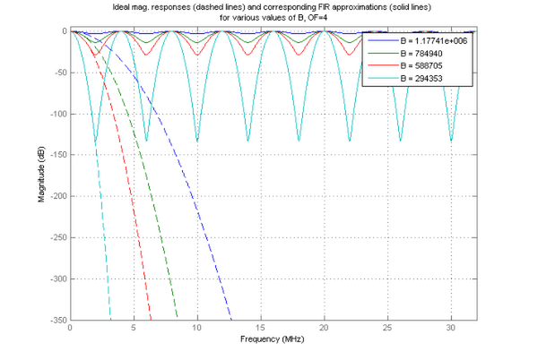

FIR ガウス パルス整形フィルター設計
このデモでは、ガウス パルス整形 FIR フィルターの設計と、この設計に影響を与えるパラメーターを示します。FIR ガウス パルス整形フィルターを設計するには、以下で得られるガウス フィルターの連続時間インパルス応答のサンプリング バージョンを打ち切ります。

パラメーター 'a' は、以下で得られるガウス フィルターの 3-dB 帯域幅シンボル時間積 (B*Ts) に関連しています。

設計には 2 つの近似誤差 (打ち切り誤差とサンプリング誤差) があります。打ち切り誤差は、理論的にはガウス フィルターの無限インパルス応答の有限時間 (FIR) を近似するために起こります。サンプリングの誤差 (エイリアシング) は、ガウスの周波数応答が厳密な意味において、実際には帯域制限されていない (すなわち、ある周波数を超えるガウス信号のエネルギーは正確に 0 ではない) という事実によるものです。これは、以下で得られる連続時間ガウス フィルターの伝達関数から示すことができます。

f が増加すると、周波数応答は 0 になる傾向がありますが、これは、エイリアシングを起こさずにサンプリングすることはできないことを意味します。正確には決して 0 にはなりません。
目次
連続時間ガウス フィルター
連続時間ガウス フィルターを設計するには、シンボル時間 (Ts) を 1 マイクロ秒に定義し、インパルス応答の開始点とそのピーク (NT) 間のシンボル数を 3 に定義します。上記の式から、ガウス フィルターのインパルス応答と周波数応答は、3dB の帯域幅シンボル時間積に関連するパラメーター 'a' によって決定します。ガウス FIR フィルター設計に対するこのパラメーターの影響を調べるため、Ts に関してさまざまな値 'a' を定義し、対応する帯域幅を計算します。次に、各 'a' のインパルス応答と各帯域幅の振幅応答をプロットします。
Ts = 1e-6; % Symbol time (sec) NT = 3; % Number of symbol periods between beginning and peak of impulse response a = Ts*[.5, .75, 1, 2]; B = sqrt(log(2)/2)./(a); t = linspace(-NT*Ts,NT*Ts,1000)'; hg = zeros(length(t),length(a)); for k = 1:length(a), hg(:,k) = sqrt(pi)/a(k)*exp(-(pi*t/a(k)).^2); end plot(t/Ts,hg) title('Impulse response of a continuous-time Gaussian filter for various bandwidths'); xlabel('Normalized time (t/Ts)') ylabel('Amplitude') legend(sprintf('a = %g*Ts',a(1)/Ts),sprintf('a = %g*Ts',a(2)/Ts),sprintf('a = %g*Ts',a(3)/Ts),sprintf('a = %g*Ts',a(4)/Ts))
インパルス応答はシンボル時間に正規化されます。
連続時間ガウス フィルターの周波数応答
帯域幅が異なる連続時間ガウス フィルターの周波数応答を計算してプロットします。次のグラフでは、振幅応答曲線の赤い円 ('o') は 3-dB のカットオフを示しています。3-dB の帯域幅は DC と B の間です。
f = linspace(0,32e6,10000)'; Hideal = zeros(length(f),length(a)); for k = 1:length(a), Hideal(:,k) = exp(-a(k)^2*f.^2); end plot(f,20*log10(Hideal)) title('Ideal magnitude response for a continuous-time Gaussian filter for various bandwidths'); legend(sprintf('B = %g',B(1)),sprintf('B = %g',B(2)),sprintf('B = %g',B(3)),sprintf('B = %g',B(4))) hold on for k = 1:length(a), plot(B,20*log10(exp(-a.^2.*B.^2)),'ro') end axis([0 5*max(B) -50 5]) xlabel('Frequency (Hz)') ylabel('Magnitude (dB)')
ガウス フィルターの FIR 近似
関数 FDESIGN.PULSESHAPING を使用して FIR ガウス フィルターを設計します。関数 FDESIGN.PULSESHAPING は、オーバーサンプリング ファクター (シンボルあたりのサンプル数など)、3-dB の帯域幅シンボル時間積、およびフィルターのインパルス応答の開始点と入力の終了点の間のシンボル周期の数を取得します。
オーバーサンプリング ファクター (OF) は、サンプリング周波数とフィルター長を決定するガウス FIR フィルター設計の重要な要素です。設計時の近似誤差は、オーバーサンプリング ファクターを適切に選択することで軽減できます。ここでは、2 つの異なるオーバーサンプリング ファクターを使用して設計されたガウス FIR フィルターを比較して説明します。
最初に、離散ガウス フィルターを設計するためのオーバーサンプリング ファクターについて考えます。
OF = 16; % Oversampling factor (samples/symbol) d = fdesign.pulseshaping(OF,'Gaussian','Nsym,BT',2*NT); for k = 1:length(a), d.BT = B(k)*Ts; h(k) = design(d); end [iz,t] = impz(h); t = (t-t(end)/2)/Ts; figure('color','white') stem(t,iz) title('Impulse response of the Gaussian FIR filter for various bandwidths, OF=16'); xlabel('Normalized time (t/Ts)') ylabel('Amplitude') legend(sprintf('a = %g*Ts',a(1)/Ts),sprintf('a = %g*Ts',a(2)/Ts),sprintf('a = %g*Ts',a(3)/Ts),sprintf('a = %g*Ts',a(4)/Ts))
FIR ガウス フィルターの周波数応答 (オーバーサンプリング ファクター = 16)
オーバーサンプリング ファクター 16 を使用してガウス FIR フィルターの周波数応答を計算し、理想的な周波数応答 (連続時間ガウス フィルターの周波数応答など) と比較します。
Fs = OF/Ts; hfvt = fvtool(h, 'FrequencyRange', 'Specify freq. vector', ... 'FrequencyVector',f,'Fs',Fs,'color','white'); title({'Ideal mag. responses (dashed lines) and corresponding FIR approximations (solid lines)' ;' for various values of B, OF=16'}) legend(hfvt, sprintf('B = %g',B(1)),sprintf('B = %g',B(2)),... sprintf('B = %g',B(3)),sprintf('B = %g',B(4)), ... 'Location','NorthEast') hold on; plot(f*Ts,20*log10(Hideal),'--') axis([0 32 -350 5])
最初の 2 つの FIR フィルターはエイリアシング誤差を示し、最後の 2 つの FIR フィルターは打ち切り誤差を示しています。エイリアシングは、サンプリング周波数がナイキスト周波数以下である場合に発生します。最初の 2 つのフィルターでは帯域幅が大きいため、オーバーサンプリング ファクターによって、エイリアシングを防げるだけのスペクトルの複製が分割されません。ただし、エイリアシングの量はあまり重要ではありません。
一方、最後の 2 つの FIR フィルターは、エイリアシングが発生する前の FIR 近似限界を示しています。これらの 2 つのフィルターの振幅応答は、スペクトルの複製と重なる前に底に達します。
オーバーサンプリング ファクターの重要性
エイリアシングと打ち切り誤差は、オーバーサンプリング ファクターに応じて変わります。オーバーサンプリング ファクターが減少すると、サンプリング周波数が減少し (これによって複製が接近する)、フィルター長も減少するため (FIR 近似の誤差が増加する)、これらの誤差が重大になります。
たとえば、オーバーサンプリング ファクターを 4 に指定すると、FIR フィルターではスペクトルの複製の重なりを防ぐのにサンプリング周波数の大きさが十分でなくなるため、FIR フィルターはエイリアシング誤差を生じます。
OF = 4; % Oversampling factor (samples/symbol) d.SamplesPerSymbol = OF; for k = 1:length(a), d.BT = B(k)*Ts; h(k) = design(d); end [iz,t] = impz(h); t = (t-t(end)/2)/Ts; figure('color','white') stem(t,iz) title('Impulse response of the Gaussian FIR filter for various bandwidths, OF=4'); xlabel('Normalized time (t/Ts)') ylabel('Amplitude') legend(sprintf('a = %g*Ts',a(1)/Ts),sprintf('a = %g*Ts',a(2)/Ts),sprintf('a = %g*Ts',a(3)/Ts),sprintf('a = %g*Ts',a(4)/Ts))
FIR ガウス フィルターの周波数応答 (オーバーサンプリング ファクター = 4)
オーバーサンプリング ファクターを 4 に指定して設計したガウス FIR フィルターの周波数応答をプロットして、検討します。オーバーサンプリング ファクターが小さくなると、サンプリング周波数も小さくなります。その結果、このサンプリング周波数がスペクトルの重なりを防ぐのに十分な大きさでなくなり、すべての FIR 近似フィルターはエイリアシングを生じます。
Fs = OF/Ts; hfvt = fvtool(h, 'FrequencyRange', 'Specify freq. vector', ... 'FrequencyVector',f,'Fs',Fs,'color','white'); title({'Ideal mag. responses (dashed lines) and corresponding FIR approximations (solid lines)' ;' for various values of B, OF=4'}) legend(hfvt, sprintf('B = %g',B(1)),sprintf('B = %g',B(2)),... sprintf('B = %g',B(3)),sprintf('B = %g',B(4)), ... 'Location','NorthEast') hold on; plot(f*Ts,20*log10(Hideal),'--') axis([0 32 -350 5]) 